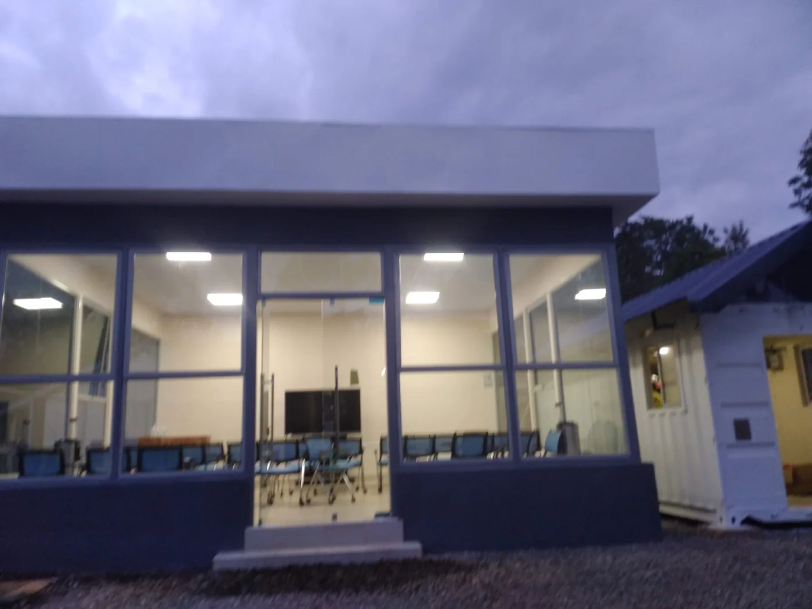
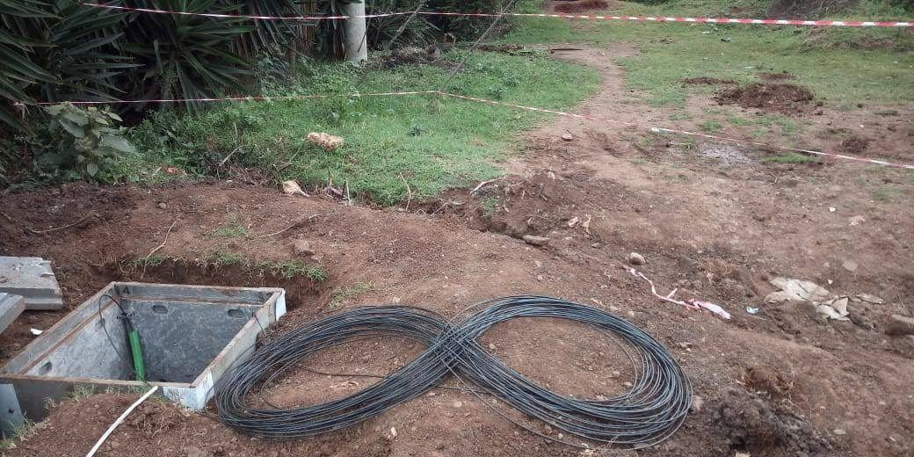

Practical engineering support for solar, security, electrical and network projects
Smartech Technologies works on energy, security, electrical and connectivity projects across Kenya, including rural and remote locations. We also take on project work in South Sudan where the scope and site arrangements allow.
One team for related work
Many projects need more than one system. A new office may need power, solar backup, CCTV, access control and structured cabling. A remote telecom site may need solar, batteries, electrical work and security.
We can assess the different requirements together, coordinate the installation and give you one point of contact for the work we undertake.
What we work on
- Solar PV and battery backup
- Hybrid solar, KPLC and generator systems
- CCTV, alarms and access control
- Electrical installation and power infrastructure
- Fibre optic and structured cabling
- Data-centre power and network cabling
- Maintenance, testing and repairs
Work we have delivered
The figures below are based on project information supplied by Smartech Technologies. They describe the company's reported delivery experience and are not presented as guarantees of future project volume.
Fibre in Kenya
Fibre deployment and related infrastructure work across Kenya.
Fibre in Uganda
Regional fibre infrastructure work in Uganda.
Fibre in South Sudan
Regional fibre work in South Sudan.
Telecom BTS sites
Solar and battery backup systems for telecommunications sites.
Hybrid power sites
Systems combining solar, KPLC supply and generator backup.
Power lines
Power-line construction and related electrical infrastructure.
Solar homes
Residential solar installations, including security and backup where required.
Solar water heaters
Solar water-heating installations for homes.
Solar CCTV homes
Home CCTV and security systems supported by solar power.
Data-centre sites
Power and structured cabling, including cable-tray infrastructure.
See examples of the work




Photographs supplied by Smartech Technologies. No client, location or project date is inferred solely from an image.
Client recommendations and manufacturer authorization
We summarise selected client recommendations and a manufacturer authorization so customers can understand our documented experience and supplier relationships. Original documents are not published on this public website; relevant evidence can be made available during procurement or due diligence, subject to permission and confidentiality requirements.
Company and regulatory information
Smartech Technologies Limited is a private company limited by shares registered in Kenya. Certificate of Incorporation No. PVT/2016/013082, incorporated 27 May 2016.
Applicable regulatory registrations, licences and tax documentation can be provided for the relevant scope of work during procurement and corporate verification. We do not publish a licence number unless it has been verified for the service being offered.
How we handle a project
- Understand the site. We review the location, load, security, network and operating requirements.
- Agree the scope. The quotation sets out what is included, exclusions and the proposed equipment.
- Install and test. Work is completed and tested according to the agreed scope.
- Handover and support. Warranty terms and support arrangements are documented for the completed work.
We can inspect systems installed by other contractors
If an existing solar, CCTV, electrical or network installation is not performing as expected, we can inspect the system and explain what needs attention. The recommendation may be a repair, upgrade or replacement depending on what we find.
Kenya-wide project coverage
We accept enquiries from all 47 counties of Kenya, including rural and remote areas. Nairobi is a coordination base, not a limit on where projects can be considered. For South Sudan, we take on project-based work, including Juba, subject to scope, logistics and site access.